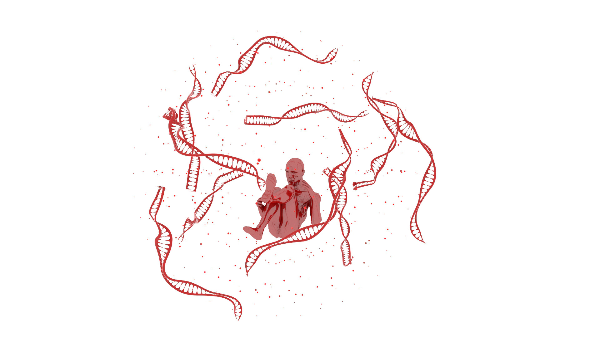

DISEÑO EDITORIAL Y REALIDAD AUMENTADA
Una edición del relato corto "Nine Lives" de Ursula K. Le Guin.
Este proyecto fusiona el diseño editorial clásico con experiencias de Realidad Aumentada,
buscando crear una narrativa inmersiva y sensorial.
SOFTWARES: Blender, Adobe Photoshop, Adobe InDesign.